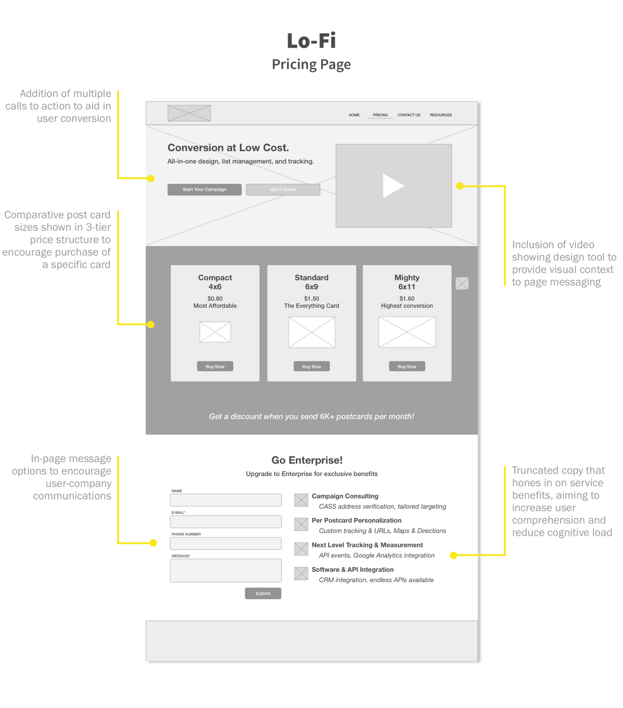
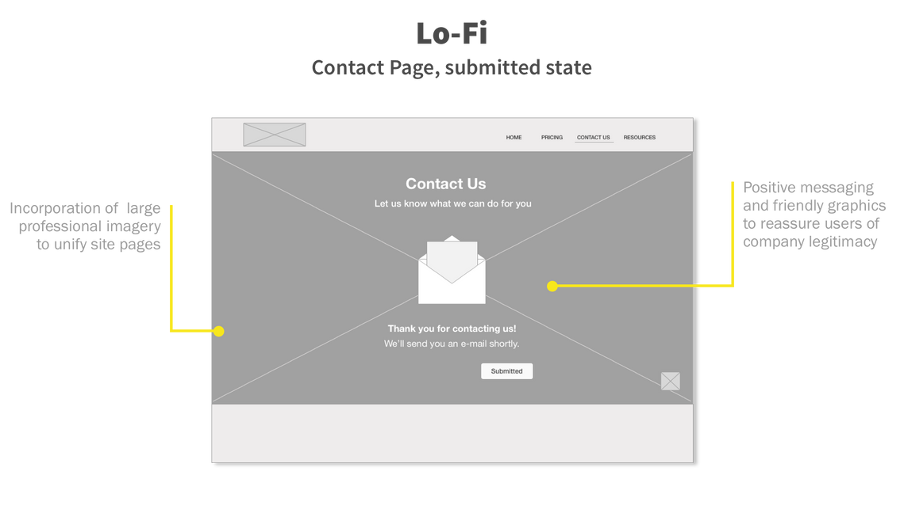
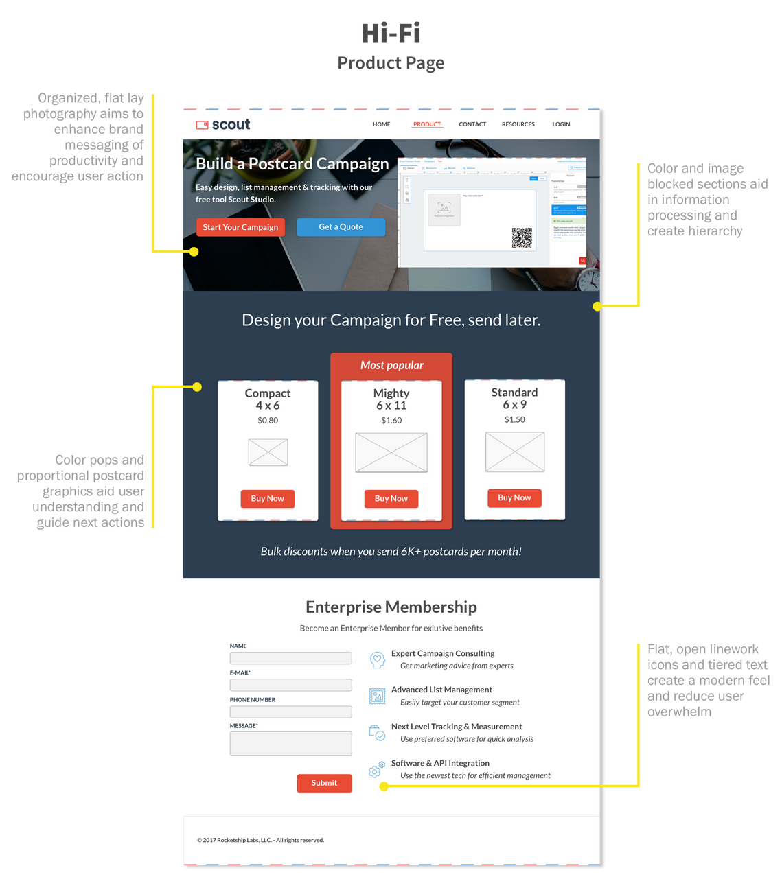

Send with Scout
Goals: Conduct user research to clarify needs of new target market, synthesize findings, and rebrand Scout website through UI design & copywriting to allow for CRO after launch.
Determining a Direction for Research
The research took a 4-part approach:
1) Comprehension test existing site copy with Direct Mail Marketers and Growth Marketers
2) Conduct user interviews with Direct Mail Marketers for insights on current workflow
3) Collaborate with Growth Marketers to optimize landing page and future CRO
4) User test in-site design tool with non-designers
Research Synthesis & Branding Changes
I found a number of pain points and numerous potential directions for the site. Standout research insights came from user interviews and site tests with Direct Mail Marketers, who perceived the Scout website as:
- Confusing; unsure of what product or it's UVP were
-"Young" and inexperienced, doubting its trustworthiness
- Flat, static
- Not interactive- users were curious how to test out the design tool without signing up

Embarking on Lo-Fi



Hi-Fi Modifications


Project Reflections
Scout presented the intriguing problem of working with an unknown product market fit, an undeveloped site in beta, and an old live site that each presented bits and pieces of an analytics and design puzzle. it was challenging to step into the problem space and figure out how to conduct research in a way that considered the value of each of those pieces and would help fit them together.
I grew my skills with Google Analytics, learning to dive in and suss out important statistics and understanding the data gaps. I additionally got a crash course in copywriting for growth, which differs immensely from my past copywriting experiences. I enjoyed implementing designs that optimize for conversion rather than being solely focused on user experience, and finding the balance that accommodates business priorities.